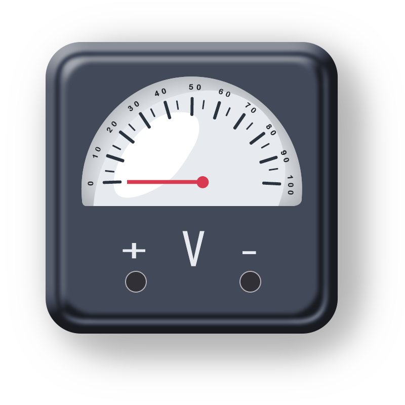

Instructions
Step 1:
The aim of this experiment is to get familiarized with the electrical devices.
Step 2:
Click on ‘Next’ Button to view the next electrical device.
Step 3:
Click on ‘Previous’ button to go back to previous electrical device.
Step 4:
Repeat Step 2 and 3 until you reach the end of the experiment.
Instructions
TO GET FAMILIARIZED WITH THE ELECTRICAL DEVICES.

Figure 1: Analog voltmeter
A voltmeter is an instrument used for measuring electrical potential difference between two points in an electric circuit. Voltmeters are made in a wide range of styles. It is connected in parallel across which we have to measure voltage difference.
It must be connected in parallel in which we want to measure the voltage. Parallel connection is used because a voltmeter is constructed in such a way that it has a very high value of resistance. So if that high resistance is connected in series than the current flow will be almost zero which means the circuit has become open.
If it is connected in parallel, than the load impedance comes parallel with the high resistance of the voltmeter and hence the combination will give almost the same the impedance that the load had. Also in parallel circuit we know that the voltage is same so the voltage between the voltmeter and the load is almost same and hence voltmeter measures the voltage.For an ideal voltmeter, we have the resistance is to be infinity and hence the current drawn to be zero so there will be no power loss in the instrument. But this is not achievable practically as we cannot have a material which has infinite resistance. .
Voltmeter has a very large resistance.
Analog voltmeters moves a pointer across a scale in proportion to the voltage of the circuit. A moving coil galvanometer can be used as a voltmeter by inserting a resistor in series with the instrument.
Digital voltmeters give a numerical display of voltage by use of an analog to digital converter. Voltmeters are made in a wide range of styles.
Analog voltmeter:There are various type of voltmeter.
Direct coupled DC voltmeter
Chopper type DC voltmeter
Solid state DC voltmeter
AC voltmeter using rectifier